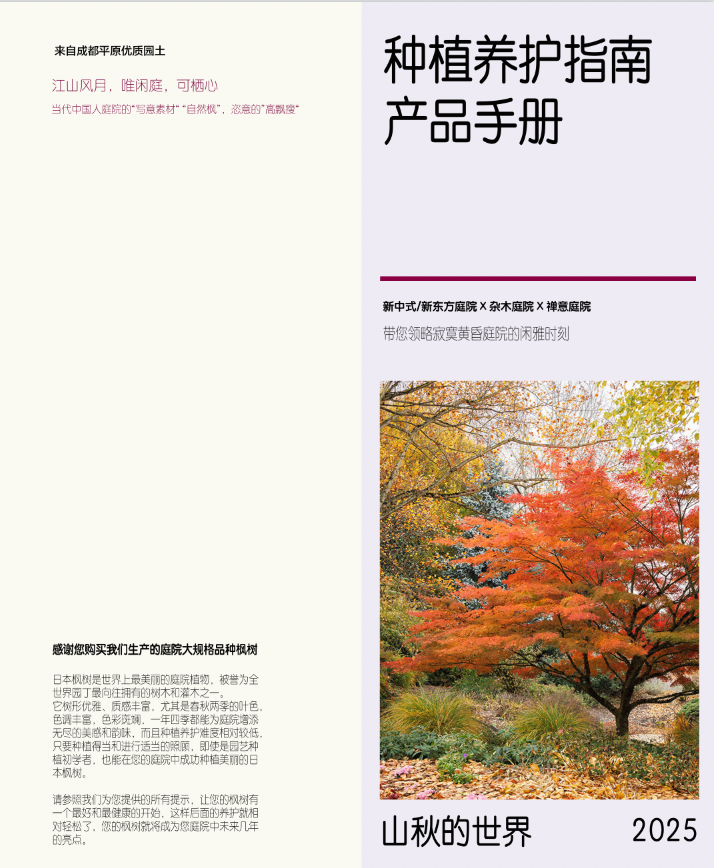

来自成都平原优质园土 · 江山风月，唯闲庭，可栖心

当代中国人庭院的"写意素材" "自然枫"，恣意的"高飘度"
感谢您购买我们生产的庭院大规格品种枫树
日本枫树是世界上最美丽的庭院植物，被誉为全世界园丁最向往拥有的树木和灌木之一。它树形优雅、质感丰富，尤其是春秋两季的叶色，色调丰富，色彩斑斓，一年四季都能为庭院增添无尽的美感和韵味，而且种植养护难度相对较低，只要种植得当和进行适当的照看，即使是园艺和种植新手，也能在您的庭院中成功种植美丽的日本枫树。
新中式/新东方庭院 × 杂木庭院 × 禅意庭院 带您领略寂寞黄昏庭院的闲雅时刻
请参照我们为您提供的所有提示，让您的枫树有一个最好和最健康的开始，这样后面的养护就相对轻松了，您的枫树就将成为您庭院中未来几年的亮点。
山秋的世界 2025
当您收到我们的枫树后，小心去除外围保护枫树的木架，去除包装固定的布带，将树冠完全舒展，去掉包裹土球和美植袋的绑扎带，然后将枫树放置在花园中的避阴通风处。为了保持枫树的健康，请不要将枫树放在车库、棚子或户内等接受不到阳光和不通风的地方。此外，为了不损坏您的枫树，请始终通过移动整个土球和美植袋来移动它，不要用树干或茎来抬起它。观察美植袋中土壤的湿度，必要情况下进行浇水补充水分，不要让土壤完全干燥。根据您当地的天气状况，为了保持美植袋中土球和根部的湿润，这可能需要每天浇水或隔天浇水，我们的美植袋非常透水透气，不用担心浇水会引起闷根，在你真正种植之前请不要移除美植袋。
只要得到这些照顾，您的这棵枫树可以在美植袋中生活很长一段时间，如果您的枫树在下地种植前需要在美植袋中放置数周，您可以通过逐渐增加枫树接收到的光量，来使其硬化到能适应在更明亮的环境下生长，只需每隔几天或每周将其移至更明亮的光线条件下即可。
如果您是在冬天收到了您的枫树，将不会有任何叶子，但是，只要地面不结冰，您仍然可以种植，不用担心，因为这对日本枫树来说是正常的，因为它们是落叶的（冬天落叶），一旦春天温暖的天气到来，您的枫树就会以新的叶子和生长中重新焕发活力。
为了获得最佳生长和性能，日本枫树喜欢有机质含量低于平均水平且排水良好的微酸性土壤。幸运的是，我们绝大多数地区的庭院土壤都基本符合这样的种植条件。我们培育的枫树，在适应几乎任何类型的土壤方面都非常出色。但是，如果您的庭院土壤像粘土一样重，您可能需要用堆肥改良土壤，但用任何太过肥沃的东西改良土壤，都可能会导致树根只在良好的土壤中盘旋生长，最终窒息。需要慎用任何类型的土壤改良剂，往往利大于弊。我们还需要清除种植位置处的杂草和任何不需要的生长物，您可以人工除草，如果您决定使用除草剂，请至少等待两周后再种植枫树，以确保杂草等已经死亡，然后将其从现场移除。
选择合适的种植地点时需要考虑的最重要因素是该区域接收到的阳光量，总体来说，一个早上接受阳光，下午接受一些阴凉的地方是理想的。日本枫树有一千多个不同品种，每一种都有不同的阳光要求。一般来说，夏季呈绿色的地栽枫树全年都能承受大量的阳光直射，但在阳光特别充足的地区，理想情况下，还是应在一天中最热的时候能够为枫树提供阴凉，这将减少树叶灼伤的可能性，而在自然阳光较少的地区，它们最好一整天都能处于充足的阳光下。对于那些全年呈现锦叶或自然红色的日本枫树，则应在半阴处种植，但不要种植在全天都处于阴凉的地方，因为即使是红色/锦叶品种，也需要大量的阳光才能形成完整的叶色，事实上，如果要想让枫树在秋天呈现最绚烂的色彩，它们需要在凉爽的地区享受尽可能多的阳光。您还需要考虑特定枫树的成熟大小和生长习性，让枫树可以在未来几年内永久生长，并满足树木健康生长的需要。这意味着您不希望它挤在墙壁、栅栏、结构上，或挤在其他灌木和树木中间，这也减少了修剪妨碍树枝的工作量。同时，为了防止病虫害的潜在问题，您需要在枫树周围留出足够的空气流通，当然，您也不想将其种植在会受到强风侵袭的地方。最重要的，当然还有要满足庭院造景的美学要求。这是您在庭院里种植枫树的核心目的，因此您可以考虑将它们种植在那些视觉焦点的区域，让枫树的壮丽光彩闪耀庭院。
尽管我们的枫树容器苗一年四季均可地栽种植，但种植时仍然需要规避极端的高温、暴晒和寒流。请始终考虑您的气候，南方与东北部有很大的不同。
我们的建议是挖一个大约是土球两倍宽的种植坑，但只有土球高度的2/3左右，这会将枫树的根领抬高到地面以上，以确保枫树有适当的排水，不会深陷在潮湿的土壤中出现闷根，枫树尤其讨厌积水问题。您可以根据气候条件适度调整种植坑的深度。如果是一个干燥的地区，可能很难得到水，您可以把枫树种得更深一点，只要您仍然保持根领稍微抬高于地面。而在雨量充沛，特别潮湿的地方，您可能需要挖一个更浅的种植坑，并通过引入额外的泥土来包裹土球，甚至几乎将枫树直接种植在地面以上。
接下来，您要将枫树的土球连同美植袋一起放入种植坑中，此时枫树根领的高度将高出种植地面，至少要确保枫树在土壤中种植的深度，不会超过它在美植袋中生长的深度，然后，定位好枫树，用松软的原始土壤进行回填，当土壤回填至种植坑深度约一半时，用手或工具压实土球/美植袋周围新中的土壤，让回填土壤与土球/美植袋充分结合，用锋利的美工刀切掉美植袋上部1/2左右并取出，以确保完全覆土后的美观。不用担心余下未去除的美植袋部分，只需将其埋入土壤中，它就会随着时间的推移而降解，不会阻碍根系的生长，这样做的目的，是尽可能减少栽种过程中对枫树根系的破坏。然后用松软的原始土壤继续回填紧实。由于土球升高，需要填充地面以上土球周围的泥土，这将在枫树根领周围形成一个小土丘，这将为您的枫树提供它迫切渴望的适当排水。
最后，您就可以在枫树的覆土上放置您选择的覆盖物了，强烈推荐覆盖物，因为它有助于隔离日晒枫树的根部，从而帮助它们在冬季保持温暖，在夏季保持凉爽，减少杂草生长，保持美观，当然，覆盖物要避免的一件事是将其堆砌在树干和主根上。保持树干周围的覆盖物薄，并在其他任何地方保持一致，覆盖物是新种植的日本枫树周围的极好补充。我们最推荐的覆盖物是松鳞覆盖物。在种植坑中定位枫树时，需要从美学上考虑，这主要基于您的个人喜好，但也有一些事情需要考虑。日本枫树确实以向光性方式生长，这意味着它们会朝向太阳生长，在尝试为您的枫树进行最佳定位时，需要注意这一点。您可以将枫树以适当的角度种植，以确保它能正常生长且符合造景美学，也就是说，您不必总是将根球笔直地放在种植坑中，如果那不是您枫树的最佳定位，请稍微调整一下以找到完美的位置。
接下来是给刚种植好的枫树浇水，这在炎热的季节种植时尤其重要。您要在种植后立即给枫树浇水，以使为它快速定根并稳定下来。浇水前最好覆盖一下土壤表面，以免松散的土壤被水冲走。日本枫树不喜欢保持潮湿，但当您在给枫树浇定根水时，你一定要让枫树的根系完全被水浸透，周围的土壤完全水饱和。
日本枫树是浅根系植物，再加上我们在种植时抬高了根领来高出地面，在根系还没有恢复并延伸到更广泛的土壤中去为枫树提供稳定性之前，如果枫树高度较高，冠幅较大，或以非垂直的方式进行种植，为了暂时保证枫树的稳定性，我们视情况可能需要采取支撑稳定措施。对枫树进行辅助固定时，不管是使用支撑还是用木桩拉绳，相信您都会小心保护枫树的树干不会受到损坏。
新地栽种植的枫树根系大约需要3-4个月才能在新的种植地点建立起来，需要大量的水才能扎根，初次浇透定根水后，后续浇水的频率，会因您所在的地区和种植时的气候而有很大差异，比如在成都地区，如果是在深秋到冬季时种植，您在初次浇水后基本上不需要再浇水，因为雨水会在接下来的几个月里提供足够的水份。但如果是在春季或夏季时种植，您需要在种植后的第一个月每周浇水约2-3次，第二个月再将浇水频率降低，直到枫树安全度夏。在地栽后的第一个夏天之后，雨水就应该能够很好地照顾好您的枫树了。
在枫树地栽生长的第二年和第三年，您需要时常观察土壤的水分含量，因为您的枫树更喜欢均匀潮湿的土壤，通常阳光充足的枫树比阴凉处的枫树需要更多的水。当然，成熟的日本枫树其实相当耐旱。在许多气候条件下，定期的降水足以使枫树能够获取充足的水分，您需要特别注意的是，在极端高温和长时间无降雨期间，或施肥后，需要及时给您的枫树浇水，您永远不希望您的枫树处于积水的土壤中，而且过度浇水会导致枫树闷根，出现根腐病，黑杆和叶子枯萎，发黄等很多问题。为避免过度浇水，请遵循深浇水，但不经常浇水，见干见湿，干湿循环的原则，同时确保排水良好。
日本枫树自然具有优雅的形状，通常只需要很少的修剪。您进行任何修剪，通常只是为了改善它们的整体形状并促进健康生长。我们通常只需要剪除平行枝，交叉枝，内生枝，徒长枝和冬季枯萎的嫩枝末梢等枯死或受损的树枝。另外，枫树总是产生两个对称的侧枝，为了美观，最好剪掉其中一根侧枝，再比如，许多日本枫树（尤其是羽毛枫）往往会向树中心积累大量细枝生长，阻止风在树内流动及阻碍光照的穿透，促生病虫害，同时妨碍您观赏枫树骨架的优美，这个时候您可以修剪掉一些这些的内生枝条。
虽然您在一年四季都可以对枫树进行修剪，但大幅度修剪（重剪）日本枫树的最佳时间是冬末（1月至2月），因为此时的枫树处于全休眠状态，而您在其他任何时候修剪，枫树都会从修剪切口中流失树液从而削弱树势。然而，精细修剪（为美观目的而进行的轻度修剪）最好在晚春叶子出来以后进行，并且将修剪最好保持在最低限度，因为最优美的形状可能恰恰来自一棵被允许相当自然地生长的枫树，而不是过多的人为干预。在您确实需要减少高度和宽度的时候，请沿着长枝回缩到分叉处，并在长枝分叉的外侧修剪掉它，请不要留下过长的残桩，因为这样的残桩通常容易腐烂和枯死，给枫树的健康带来危害。一把锋利干净的修枝剪是理想的工具，钝而脏的修枝剪会导致切口愈合困难和病菌感染，在修剪之前，请您务必用酒精给修枝剪消毒，以免将病菌传染给枫树。
在大多数情况下，日本枫树不需要额外的肥料。如果在您的庭院里其他植物可以生长得很良好，那么日本枫树通常也会生长良好。当然，如果土壤非常贫瘠或缺乏元素，或者您希望您的枫树能够长得更快而且更强壮，提高枫树的整体抗性和提升叶色的观赏性，也可以考虑有节制地给枫树施加适当的肥料。但需要最注意的是，通常市面上的农用高浓度NPK复合肥并不适合您的枫树，反而会造成致命伤害，请选用低NPK的园艺植物专用肥，或参照我们枫树专用肥的配方思路自行配制有机肥。在初春枫树展叶前，您可以使用稀释的缓释有机肥来施肥，在初春到仲春的枫树生长季节期间，也可以适量追肥，但一定要避免使用高氮肥料，而夏末和秋冬季，则禁用任何肥料，如果您在进入秋季之后继续施肥，新生长的枝条柔软来不及硬化，在冬天会更容易受到霜冻和寒风的损害而削弱树势。
更多关于枫树施肥方面的注意事宜，请阅读我们赠送的枫树专用肥包装袋上的说明。
大多数日本枫树地上部分的耐寒范围是-18°C到-25°C，地下部分（根系）的耐寒极限是-10°C，如果您的枫树种植在特别寒冷的地区，您可能需要在冬季最寒冷的月份给予它们一些额外的保护。尤其是保护好枫树的根部。
与其他庭院观赏植物相比，日本枫树很少会有病害，大多数严重的病害都是发生在集中种植的幼树上。只要您种植方式合理，生长环境适宜，已经成年的枫树几乎不会受到病虫害影响。您已经掌握了适合枫树的土壤环境与栽种方法，会运用正确的种植技术，进行科学的水分管理，再加上一些种植经验，尤其是合理的修剪和消毒，完全可以减轻或则消除您枫树可能出现的问题，使其茁壮成长，保持健康与活力。枫树可能的伤害威胁主要来自病菌危害和害虫危害两个方面。有害病菌通常包括细菌和真菌，如假单胞菌、轮枝菌、镰刀菌、葡萄孢菌、腐霉菌属、赤壳属和疫霉属真菌等，主要的病害表现为黑杆病、黄萎病、立枯病、根腐病、炭疽病、白粉病等。主要的虫害包括天牛、红蜘蛛、蚜虫等。
枫树病菌类的危害需以预防为主，包括选择抗病砧木（如鸡爪槭）、改善栽培环境（通风、控温、排水）、规范修剪操作及在高温高湿季节喷施杀菌剂（如多菌灵、恶霉灵）等。总体来说，预防要比治疗更容易，重点就是避免您的枫树处于高温高湿、不通风、闷根积水，缺乏光照的环境，一旦发现病害征兆，您需要及时剪除病枝并销毁，轻度感染时可尝试杀菌剂喷涂病兆部位和用药剂灌根，但发现较晚的重症植株往往难以挽救。枫树虫害的防治则相对容易，只需要及时喷施相应的杀虫剂即可。
了解更多关于日本枫树种植养护方面的知识和讯息，欢迎加入我们的粉丝群。